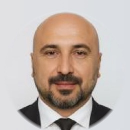
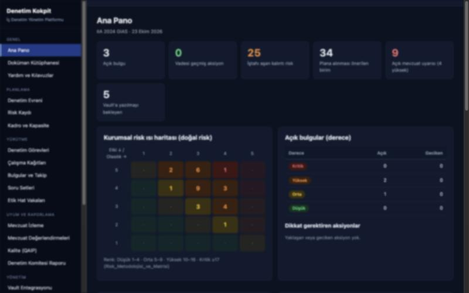
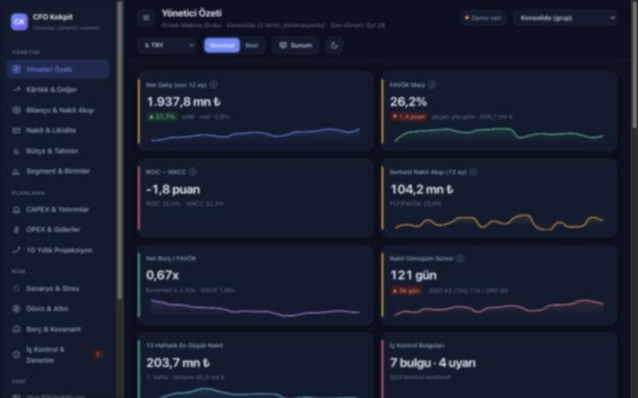
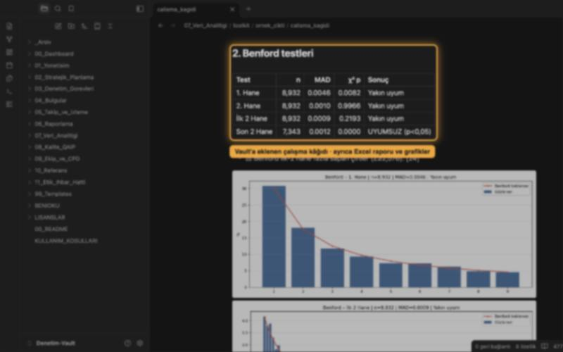
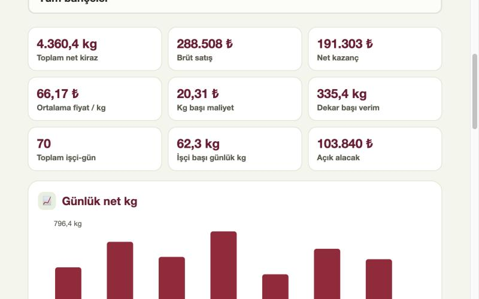

Mali İşler Yönetimi & Dış Kaynak CFO
Belirli süreli veya yarı zamanlı mali işler yöneticiliği; bütçeleme, nakit akış ve likidite yönetimi, banka ve finansman ilişkileri, yönetim raporlaması.
Mali İşler · İç Denetim · Risk Yönetimi · ERP Dönüşümü
Tarım, imalat, enerji, akaryakıt, madencilik ve otomotiv sektörlerinde mali işler yöneticiliği ve iç denetim müdürlüğü görevlerinden gelen saha deneyimini; şirketinizin kontrol ortamına, raporlamasına ve büyüme planlarına taşıyoruz.

Kurucu · Yönetim Danışmanı
Hakkımızda
YGATES Stratejik Yönetim ve Danışmanlık; kurucusu Yaşar Güven Ateş'in 1999'dan bu yana muhasebe, finans, mali işler yönetimi ve iç denetim alanlarında edindiği birikim üzerine kuruludur. Çok sektörlü şirket gruplarında mali işler müdürlüğü, genel müdür yardımcılığı, grup finans direktörlüğü ve iç denetim müdürlüğü görevlerini bizzat üstlenmiş olmanın verdiği bakışla çalışırız.
Önerdiğimiz her sistem; uygulanabilir, belgelenmiş ve denetlenebilir olmalıdır. Risk haritasından ERP mimarisine, bütçe disiplininden teşvik dosyasına kadar her çalışmayı mevzuat çerçevesinde, ölçülebilir çıktılarla teslim ederiz.
Hizmetler
Belirli süreli veya yarı zamanlı mali işler yöneticiliği; bütçeleme, nakit akış ve likidite yönetimi, banka ve finansman ilişkileri, yönetim raporlaması.
Denetim evreni ve yıllık denetim planı, birim bazlı soru setleri, IIA standartlarına uygun denetim süreçleri, COSO temelli iç kontrol sistemi kurulumu ve iç denetim yazılımı uyarlaması.
ISO 31000 uyumlu risk yönetimi çerçevesi, risk haritaları, kritik kontrol noktaları, görev tanımları ve yetki matrisleri.
Fiili ve proje bazlı maliyet sistemleri, mali tablo analizi, KPI ve yönetim panoları; üretim, tarım ve hizmet işletmelerine özel raporlama altyapısı.
SAP FI/CO, Logo Tiger ve Mikro projelerinde kavramsal tasarım ve proje yöneticiliği; sevkiyat, satınalma, kantar, depo ve üretim süreçlerinin entegrasyonu, 3. parti yazılım uyarlaması.
Yatırım teşvik belgesi, TKDK-İPARD ve KOSGEB proje danışmanlığı, kamu ihale süreçleri; indirimli oran ve ihracat kayıtlı KDV iadesi, YMM ve bağımsız denetim koordinasyonu.
Yaklaşımımız
Mevcut süreçler, kontrol ortamı, mali tablolar ve sistemler yerinde incelenir; riskler önceliklendirilir.
İş akışları, kontrol noktaları, raporlama rutinleri ve yol haritası yönetimle birlikte belirlenir.
ERP, prosedür ve ekip düzenlemeleri hayata geçirilir; çalışanlara uygulamalı eğitim verilir.
Göstergeler düzenli raporlanır, sapmalar takip edilir ve sistem sürekli iyileştirilir.
Dijital Çözümler
Danışmanlık çalışmalarında tekrar eden ihtiyaçlar için kendi yazılım ve uygulamalarımızı geliştiriyoruz. Tümü verinizi kendi bilgisayarınızda ya da sunucunuzda tutacak şekilde tasarlanmıştır.

İç Denetim Yönetim Platformu
IIA 2024 Küresel İç Denetim Standartlarına göre kurgulanmış çok kullanıcılı platform. Denetim evreni, risk kaydı, görevler, çalışma kağıtları, bulgu takibi, denetlenen birimlerle soru setleri ve mevzuat izleme tek ekranda.

Finansal Yönetim Sistemi
Yönetici özeti, kârlılık ve değer analizi, entegre bilanço ve nakit akışı, 13 haftalık likidite projeksiyonu, bütçe sapma köprüleri, senaryo ve stres testleri ile iç kontrol takibi.

Obsidian İç Denetim Çalışma Ortamı
Standartlarla eşleşmiş 34 şablon, 28 kontrol kütüphanesi, canlı panolar ve Benford dahil veri analitiği araç seti. Yıllık plandan bulgu takibine tüm iş akışı tek klasörde.

Tarım · Bahçe İşletme Defteri
Küçük ve orta ölçekli kiraz bahçesi sahipleri için cepte işletme defteri. Kantar fişi ve dara, kişi bazında işçi puantajı ve ödeme dökümü, faturadan ilaç-gübre-yakıt giderleri, stopaj/SGK kesintisi ve alıcı ödemeleri; günlük ve kümülatif satış, kâr-zarar tablosu, başabaş fiyatı ve kısa işletme özeti.
Görseller örnek (kurgusal) verilerle alınmış, ayrıntılar bilinçli olarak bulanıklaştırılmıştır. Canlı tanıtım için bizimle iletişime geçin.
Sektör Deneyimi
Kurucu Deneyimi
Bağımsız danışmanlık · Tarım ve imalat
Büyüme sürecindeki tarım ve imalat işletmelerinde ERP seçimi ve uyarlamasını (Mikro, Logo, SAP) yönetiyor; finans, insan kaynakları, satınalma, depo, sevkiyat ve bilgi işlem departmanlarının iş akışlarını, görev tanımlarını ve raporlama rutinlerini kuruyor. Kamu ihale süreçlerini ve yatırım teşvik / İPARD projelerini planlıyor, uyarlama boyunca belirli süreli yönetsel rol üstleniyor.
Niğtaş A.Ş. · Maden, tarım, hayvancılık, GES ve akaryakıt grubu
Grubun iç denetim fonksiyonunu kurdu: departman iş planı ve bütçesi, risk haritaları, denetim takvimi ve iş birimine özel soru setleri. İç denetim yazılımını şirkete kazandırıp uygulamaya aldı; ERP ve 3. parti yazılım entegrasyonlarıyla şirket içi ERP evreninin kurulmasında proje ekibine yön verdi.
Antoto Akdeniz Otomotiv A.Ş. · Stellantis yetkili bayi (Opel, Peugeot, Citroën, DS)
Satış ve satış sonrası operasyonlara bağlı muhasebe, finans ve raporlama süreçlerini yönetti. Stellantis operasyon yazılımı Efes'in veri akışını Logo ERP'ye entegre etti, Logo Insight üzerinde takip ve raporlama uygulaması geliştirdi; iş emri, sigorta, garanti ve marka kampanyası takibini disipline etti.
Koyuncuoğlu Şirketler Topluluğu – Setaş A.Ş. · Orman ürünleri
Üretim, genel muhasebe, maliyet, insan kaynakları ve finans iş akışlarını yeniden kurguladı. Sevkiyat, hammadde satınalma, kantar, satış ve üretimi kapsayan operasyonel ERP'nin kavramsal tasarımını ve proje yöneticiliğini üstlendi; OGM ihaleleri, banka teminatları, bütçe ve raporlama yapısını oluşturdu, MESEM eğitim projesini fabrikaya uyarladı.
Gülbudak Gıda Soğutma Tekstil İnş. Tic. · Tarım ve gıda
Muhasebe ve personel sistemini sıfırdan yapılandırdı; barkodlu soğuk oda, müstahsil ve bahçe bazlı maliyet takibi sunan firmaya özel tarımsal yazılımı geliştirdi. Üç yatırım teşvik belgesi (2,8 MW GES dahil) ve toplam ~10 milyon Euro tutarındaki üç TKDK-İPARD projesini sonuçlandırdı; indirimli oran ve ihraç kayıtlı KDV iadelerini düzenli yürüttü.
SGA Group · Antoil, Mevlana Petrol ve grup şirketleri
Grubun finansman, ödeme planı, nakit akışı ve bütçe süreçlerini yönetti; cari tahsilat ve müşteri kârlılığı takibini iyileştirdi. Report server üzerinden otomatik rapor dağıtımını kurdu, CRM ve satış ekiplerine güncel veri akışı sağladı, şirket içi ihale kurulunda lider rol aldı.
Opadco Şirketler Grubu · Akaryakıt ve lojistik
Toptan ve perakende akaryakıt ile tanker lojistiği şirketlerinin muhasebe, beyanname ve mali raporlamasını EPDK ve vergi mevzuatına uygun yürüttü. Sunucu yapısını yeniden düzenleyip istasyon verilerinin merkeze günlük aktarımını sağladı; KOSGEB ve destek projelerini takip etti.
Belkıs Muhasebe · Mali müşavirlik bürosu
280 firmalık portföyde sorumlu olduğu işletmelerin muhasebe ve mevzuat uyumunu yönetti; muhasebe programı geçişlerinde ofislere eğitim ve danışmanlık verdi. Yetiştirdiği iki stajyer bugün mali müşavir olarak çalışıyor.
Yetkinlik Alanları
Bütçe, nakit akışı ve finansman planını kurar; mali tabloları yönetimin karar verebileceği raporlara dönüştürürüz.
Riskleri önceliklendirir, kritik kontrol noktalarını belirler ve denetim fonksiyonunu yazılımıyla birlikte devreye alırız.
İş akışlarını analiz eder, belgelendirir ve ERP ile entegre ederek tekrar eden işleri otomatik raporlamaya taşırız.
Vergi ve sektör mevzuatına uyumu güvenceye alır, teşvik ve hibe fırsatlarını işletmeye kazandırırız.
Departmanları kurar, görev tanımlarını ve personel yapısını oluşturur, ekipleri uygulamalı eğitimle yetkinleştiririz.
Üretim, tarım, inşaat ve akaryakıtta stok ve maliyeti işletmenin gerçek iş modeline göre izleriz.
Mesleki Gelişim
İletişim
İlk görüşmede mevcut durumunuzu dinliyor, öncelikli alanları ve uygun çalışma modelini birlikte belirliyoruz. Paylaştığınız tüm bilgiler gizlilik esasıyla değerlendirilir.